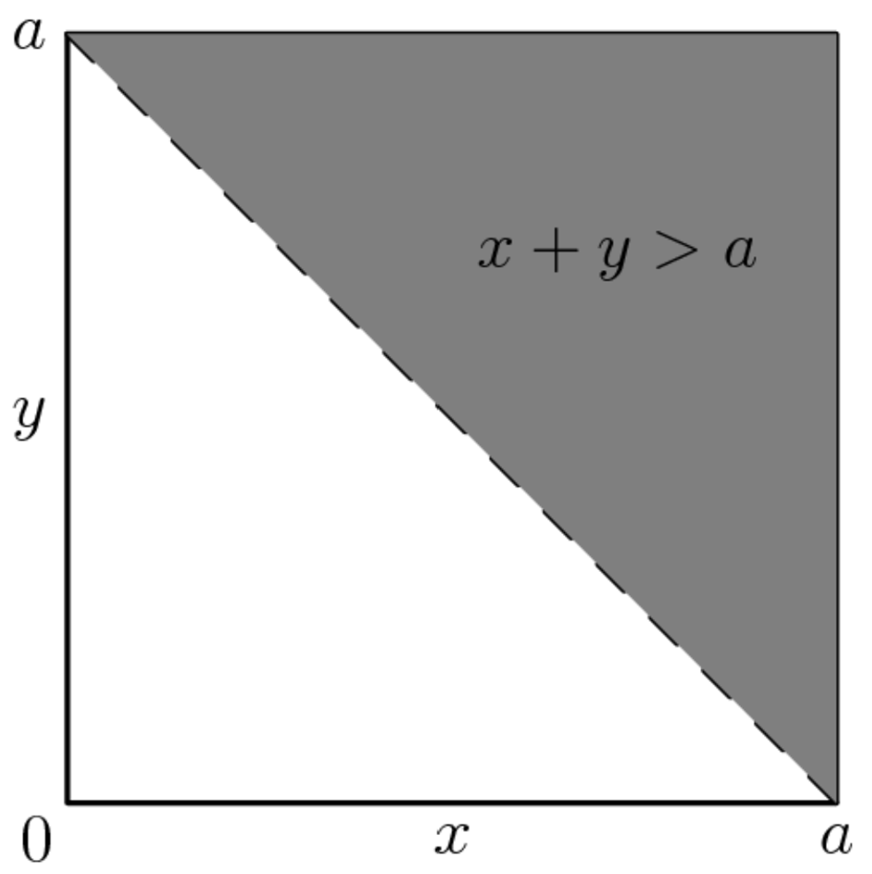

OVERVIEW
Probability is the branch of mathematics concerned with quantifying the likelihood of an event occurring. In short, probability attempts to make sense of the uncertainty and randomness inherent to the world we live in by providing a systematic way to measure the chance of various outcomes. In the real world, our brains regularly use probability in attempts at making more informed and strategic decisions that optimize outcomes in various aspects of life and work. However, probability often doesn’t reach the same conclusions we might expect. Did you know that there is more than a 50% probability that at least one pair of individuals in a group of 23 individuals will share the same birthday?
List of probability topics:
- Theoretical probability
- Empirical probability
- Subjective probability
- Discrete probability
- Continuous probability
List of probability applications:
- Game theory
- Risk assessment
- Weather forecasting
- Quality control
- Medical diagnosis
PROBLEMS
- Jerry starts at 0 on the real number line. He tosses a fair coin 8 times. When he gets heads, he moves 1 unit in the positive direction; when he gets tails, he moves 1 unit in the negative direction. The probability that he reaches 4 at some time during this process is a / b where a and b are relatively prime positive integers. What is a + b?(For example, he succeeds if his sequence of tosses is HTHHHHHH) (AMC 12A 2016 Problem 19)
- Three numbers in the interval [0, 1] are chosen independently and at random. What is the probability that the chosen numbers are the side lengths of a triangle with positive area?(AMC 12A 2015 Problem 19)
SOLUTIONS
- First, split all of the possible sequences into different cases depending on the number of heads flipped.
First case – 6, 7, or 8 heads. For any sequence that has 6, 7, or 8 heads, Jerry will always reach 4 at some point. There is a total of 8 choose 6 ( (8*7)/(2*1) ) sequences of 8 flips given that there are 6 heads, 8 choose 8 ( (8)/(1) ) sequences of 8 flips given that there are 8 heads, and 8 choose 8 ( (8)/(8) ) sequences of 8 flips given that there are 8 heads. In total, there are (8*7)/(2*1) + (8)/(1) + (8)/(8) = 28 + 8 + 1 = 37 sequences in this case.
Second case – 5 heads. For any sequence that has 5 heads, either the first 4 rolls have to be consecutive heads or the first 6 rolls have to contain 5 heads and 1 tail. For the first condition, there are a total of 4 choose 1 ( (4)/(1) ) sequences. For the second condition, there are 6 choose 1 ( (6)/(1) ) sequences. However, 2 cases overlap (HHHHHTTT and HHHHTHTT) so we need to subtract them. In total, there are (4)/(1) + (6)/(1) - 2 = 4 + 6 - 2 = 8 sequences in this case.
Third case – 4 heads. For any sequence that has 4 heads, the first 4 rolls have to be consecutive heads. There is 1 sequence that fits this case (HHHHTTTT).
Fourth case – less than 4 heads. For any sequence that has less than 4 heads, there is no sequence that will allow Jerry to reach 4.
Overall, there are 37 + 8 + 1 = 46 sequences where Jerry can reach 4 at some point in the processes. In total, there are 2^8 = 256 sequences because there are 2 possibilities (H or T) for each of the 8 rolls. Thus, the probability of Jerry reaching 4 is 46/256 = 23/128. Add 23 and 128 to get 151. - For a triangle to be formed, the side lengths must follow the inequality a + b > c where a, b, and c are any side lengths of the triangle. Once a valid triangle is formed, the triangle will definitely have a positive area. One way to look at this problem is through the perspective of a graph. WLOG, let one side length equal x, one side length equal y, and the longest side length equal a. Using the graph below, any coordinate (x, y) above the line x + y = a fits the inequality x + y > a. The probability that a coordinate (x, y) is above the line x + y = a using the area of the shaded triangle compared to the unit square is 1/2. 
SOURCES
Mathematical Association of America. “Art of Problem Solving.” Art of Problem Solving, https://artofproblemsolving.com/wiki/index.php/2016_AMC_12A_Problems. Accessed 10 July 2023.
Mathematical Association of America. “Art of Problem Solving.” Art of Problem Solving, https://artofproblemsolving.com/wiki/index.php/2016_AMC_12B_Problems. Accessed 10 July 2023.
“Probability - Formula, Calculating, Find, Theorems, Examples.” Cuemath, www.cuemath.com/data/probability/. Accessed 29 July 2023.
Siegmund, David O. “Probability Theory.” Encyclopædia Britannica, 13 June 2023, www.britannica.com/science/probability-theory.